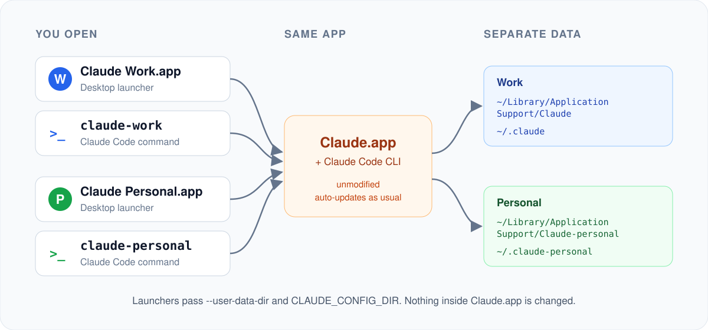

Stop juggling one Claude login
Claude Desktop is signed in to one account at a time. If you have a work account and a personal one, everything ends up in the same place.
Without it
- Sign out, sign in, repeat
- Work and personal chats in one history
- One set of MCP servers and connectors for everything
- Claude Code hooks, plugins and tracing shared across accounts
With claude-profiles
- Claude Work and Claude Personal open at the same time
claude-workandclaude-personalin the terminal- Each profile keeps its own sign-in, chats, MCP config and settings
- Your current setup stays exactly as it is
Set up in a minute
Two commands, then sign in once in each place.
claude-profiles add work --default # your current Claude becomes "Claude Work" claude-profiles add personal # a second, fully separate profile
It's in Spotlight, Launchpad and ~/Applications. Drag both launchers to your Dock.
Run claude-personal and type /login. Check everything with claude-profiles doctor.
Built to be boring in the best way
Small, safe and easy to remove. Nothing about Claude itself changes.
Desktop + CLI
One profile gives you a Desktop launcher and a Claude Code command. Desktop's Code tab follows the profile too.
Updates keep working
Claude.app is never modified, copied or re-signed. One update covers every profile.
Badged icons
A colored letter badge on each launcher, drawn on your Mac from your own Claude icon.
One window per profile
Clicking a launcher again brings that profile forward instead of opening a duplicate.
Safe by design
No sudo, no network at run time, never deletes files it didn't create.
Nothing to install
Uses only what ships with macOS. Tested on macOS 14, 15 and 26, Apple Silicon and Intel.
How it works
Claude Desktop keeps its state in one data folder and Claude Code keeps its own in CLAUDE_CONFIG_DIR. Each profile simply points both at its own folders.

FAQ
The questions people usually ask first.
Can I use two Claude accounts at the same time on a Mac?
Yes. Each profile runs its own Claude Desktop instance with its own data folder, so a work and a personal account can be signed in side by side.
Does it modify Claude Desktop?
No. The launchers start the Claude.app you already have with --user-data-dir and CLAUDE_CONFIG_DIR. That's also why auto-updates keep working.
Will I lose my current chats or sign-in?
No. claude-profiles add work --default uses the folders Claude already uses, so nothing moves.
Why does the Dock say "Claude" for every running window?
All windows come from the same Claude.app. Renaming it would break its signature and updates, so you click the badged launchers instead.
Is it safe?
It runs as you without sudo, makes no network calls and never reads your tokens. Each profile signs in by itself inside Claude.
Windows or Linux?
macOS only for now. Windows support is a great first contribution.